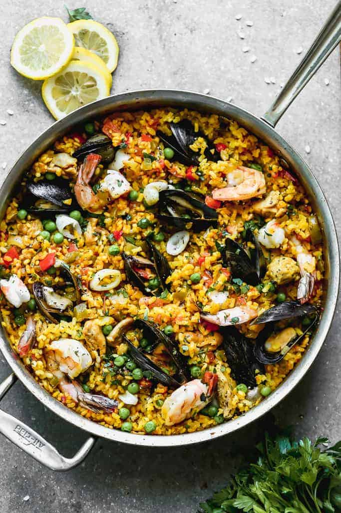

Paella Recipie

The standard time to perfect this paella recipe is 1hr 30 mins, to 2 hours.
Prep time is approx. 45 mins and cook time is also 45 mins.
Ingredients
- 4 tablespoons olive oil
- 1 onion, chopped
- 2 cloves garlic, minced
- 1 red bell pepper, chopped
- 4 ounces Spanish chorizo, casing discarded
and cut into 1/4 dice
- 2 skinless, boneless chicken breast halves -
cut into 1-inch cubes
- 1 (12 ounces) package uncooked Arborio rice
- 5 spoons chicken broth
- 1/2 cup white wine
- 1 sprig fresh thyme
- 1 pinch saffron
- salt to taste
- groun black pepper to taste
- 2 squid, cleaned and cut into 1-inch pieces
- 2 tomatoes, seeded and chopped
- 1/2 cup frozen green peas
- 12 large shrimp, peeled and deveined
- 1 pound mussels, cleaned and debearded
- 1/4 cup chopped Italian flat leaf parsley
- 8 slices of lemon, for garnish
Steps
- Step 1:
Heat olive oil in paella pan over medium heat. Add onion, garlic, and pepper;
cook and stir for a few minutes. Add chorizo sausage, diced chicken, and rice;
cook for 2 to 3 minutes. Stir in 3 ½ cups stock, wine, thyme leaves, and saffron.
Season with salt and pepper. Bring to the boil, and simmer for 15 minutes; stir
occasionally.
- Step 2:
Taste the rice, and check to see if it is cooked. If the rice is uncooked, stir in ½
cup more stock. Continue cooking, stirring occasionally. Stir in additional stock
if necessary: use up to 2 cups additional stock, 5 cups total. Cook until rice is
done.
- Step 3:
Stir in squid, tomatoes, and peas. Cook for 2 minutes. Arrange prawns and
mussels on top. Cover with foil, and leave for 3 to 5 minutes.
- Step 4:
Remove the foil, and scatter parsley over the food. Serve in paella pan,
garnished with lemon wedges.
Homepage